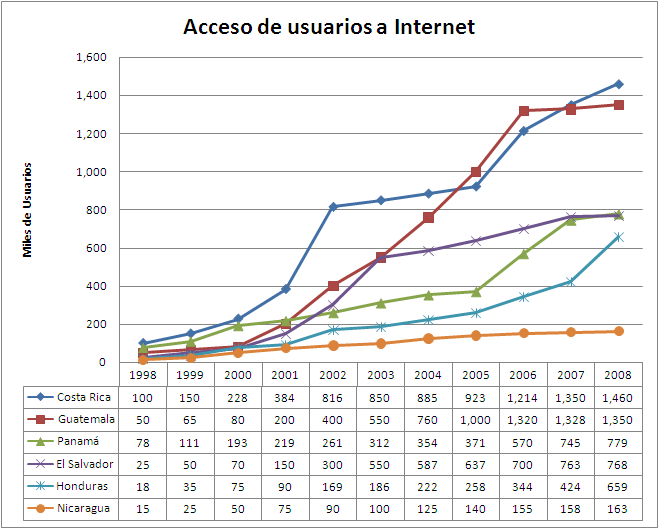

El acceso a la web
Acceso a Internet o conexión a Internet es el sistema de enlace con que el computador, dispositivo móvil o red de computadoras cuenta para conectarse a Internet, lo que les permite visualizar las páginas web desde un navegador y acceder a otros servicios que ofrece Internet, como correo electrónico, NetMarketShare, protocolo de transferencia de archivos (FTP), etcétera.

Hay que tener en cuenta que:
- NetMarketShare: recoge estadísticas de más de 400.00 sitios web.
- NetMarketShare: no cuenta vistas, sino que cuenta visitantes diarios.
- NetMarketShare: pondera los visitantes de cada pais de acuerdo con los datos de tráfico de internet publicados por la CIA.